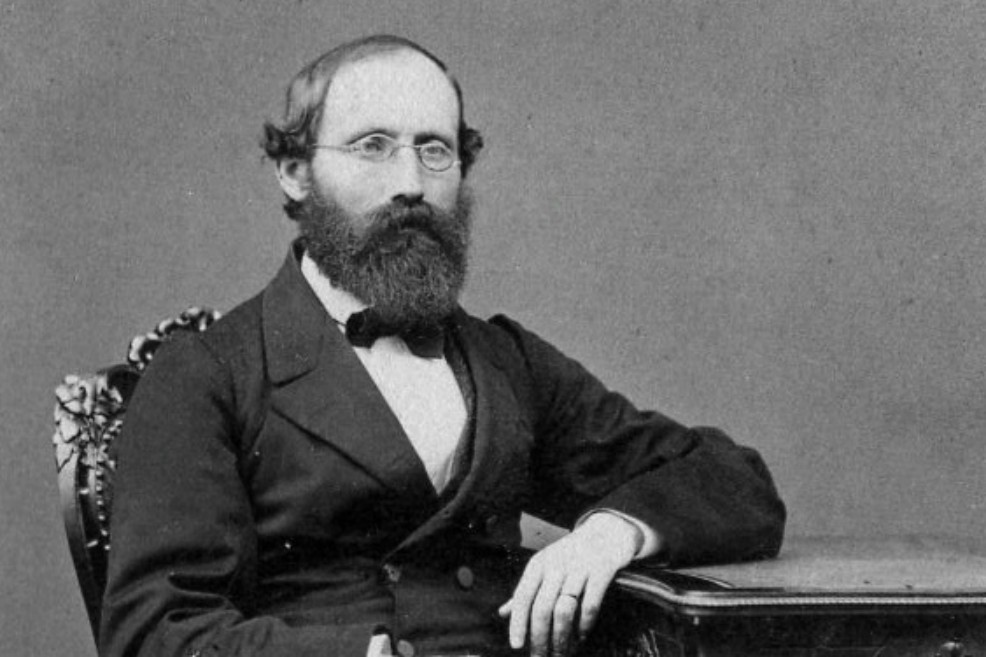

Bernhard Riemann
Biografía
El señor Georg Friedrich Bernhard Riemann, nacido en la ciudad de Dannenberg, Alemania, el 17 de septiembre de 1826, fué un matemático prolífico, hijo de un pastor de provincia al norte de Alemania. Riemann era tímido y modesto; tenía poca conciencia de su extraordinario talento; de ahí que, a la edad de diecinueve años, fuera a la universidad de Göttingen y estudiara teología con el fin de complacer a su padre. Pronto Riemann se cansó y retomó sus estudios en matemáticas.
Poco después, se mudó a Berlín. allí se reunión con Dirichlet y Jacobi, y aprendió mucho de ellos. Dos años más tarde regresó a Göttingen y estudió un doctorado. Durante los siguiente ocho años, Riemann padeció de pobreza extrema y también produjo sus grandes obras científicas.
Trabajó en la universidad de Göttingen como profesor. Murió de tuberculosis el 20 de julio de 1866 en Italia.
Descubrimientos importantes
Entre sus grandes aportes a las matemáticas, se encuentra su artículo llamado "Grundlagen für eine allgemeine Theorie del Funktionen einer Veränderlichen complexen Grösse" ("Conceptos básicos para una teoría general de las funciones de variable compleja"), publicado en 1851.
Él también logró definir la integral de forma rigurosa en el año de 1854, con lo cual abrió una nueva rama de las matemáticas, la teoría de las funciones de una variable real. En el mismo año él publicó sus investigaciones sobre geometría diferencial, algebra tensorial y cálculo sobre variedades, en un artículo llamado "Über die hypothesen, welche der Geometrie zu Grunde liegen" ("Sobre las hipótesis en que se funda la geometría"). En esta publicación consiguió generalizar la geometría euclidiana y la no euclidiana, con lo que se conoce hoy en día como "geometría de Riemann" o riemanniana. En este tema se encuentran la invención de los tensores y de las variedades diferenciables, que tratan la curvatura de un objeto y desempeñan un papel fundamental en física, ecuaciones diferenciales en derivadas parciales y teoría de la relatividad.
En 1859, formula su conjetura, "la conjetura de Riemann", en la que se encuentra implicada la función zeta de Riemann, presentada en su trabajo "Über die Anzahl der Primzahlem unter einer gegebenen Grösse" (Sobre el número de primos menores que una cantidad dada). Esta conjetura, se considera como la más importante de la teoría de números y otros campos de las matemáticas.
Adicionalmente, hizo importantes contribuciones a las ecuaciones de Cauchy-Riemann, el teorema de transformaciones de Riemann, superficies de Riemann, el teorema de Riemann-Roch, entre otros. Estas ramas se estudian intensamente en la actualidad.
Las contribuciones de Riemann a las matemáticas han sido cruciales en el desarrollo de esta materia, y han sido de estudio extensivo por parte tanto de físicos como de matemáticos para terminar de desarrollar sus teorias. Sus ideas fueron revolucionarias y han servido de inspiración para muchas otras personas.
Sucesores
- Albert Einstein
- Hermann Minkowski